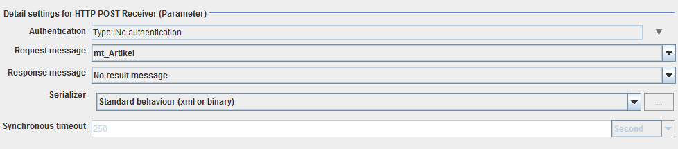

HTTP POST Receiver (Parameter)

Topic content
Description
A HTTP POST Receiver is used to handle with HTTP POST calls.
Purpose of object
A HTTP POST Receiver is used to recognize HTTP POST calls at a specific URL and use them to trigger a process. A start event is generated and a message with the delivered data is created. This channel expects the incoming message to consist of Key-Value pairs, like it is send from an HTML form. The message type must define a simple list out of child elements. The names of the child elements are the parameters that will be extracted out of the incoming messages.
Creation
To create a HTTP POST Receiver (Parameter) follow the steps described in the general description of Channels.
Configuration
The dialog to configure the HTTP POST Receiver(Parameter) looks like:

Authentication: HTTP authentication: basic: user/password, digest: user/password, certificate authentication: authentication of the client via certificate (X509)
Request message: Choose a message type that defines the request message
Response message: Choose a message type that defines the response message
Serializer: Choose how the response message is serialized
Synchronous timeout: Choose the duration, the process (which is invoked by this channel) has to deliver a response message. If the process needs longer, a timeout is send as response.
See also
For special cases of HTTP invocations use the channel HTTP Post sender and HTTP Sender (Parameter), for general use HTTP Caller.
To accept HTTP invocations you can use the channels HTTP GET Receiver and HTTP POST Receiver (General).